When you complete this learning material, you will be able to:
Explain the significance of environmental parameters and methods of monitoring.
You will specifically be able to complete the following tasks:
Explain the significance of the following air quality parameters: particulates, stack opacity, \( \text{SO}_2 \) concentration, \( \text{SO}_2 \) mass flow, \( \text{NO}_x \) concentration, \( \text{NO}_x \) mass flow, mercury, \( \text{O}_2 \) , \( \text{CO}_2 \) , and hydrocarbons.
Thousands of chemical elements and compounds produced as by-products of industrial processes are released into the air. Although many are also produced and released by ongoing natural processes, all emissions are contaminants or pollutants. Government regulations cover hundreds of emissions in various jurisdictions although a relative few are so important and so widespread that they are regulated in most jurisdictions. This module is concerned with emissions from combustion processes in a power plant that are released to the environment through the stack of a boiler or heat engine. Local or regional legislation or licenses define maximum acceptable limits for the concentration of each emission monitored.
Some industries have reduced emissions to near zero levels. An example of this is the “zero effluent discharge” approach taken towards water contamination in the pulp and paper and chemical industries. In order to comply with regulations, all plants have a legal obligation to maintain low emission levels. This requires long-term planning for emissions control, including quantitative monitoring of released contaminants and a budget for maintaining or improving future emissions performance. This type of program is both good for business and environmentally sustainable.
The most significant power plant air emissions are part of a group called Criteria Air Pollutants, a term coined by the United States’ Environmental Protection Agency. Environment Canada publishes similar Criteria Air Contaminant Emissions for Canada. They are available on the Environment Canada Website. Ambient air quality standards are set and acceptable exposure levels are determined for Criteria Air Pollutants. Exceeding the acceptable levels causes excessive damage to the environment, and/or to risks to the health of animals and people exposed.
An accumulation of Critical Air Pollutants causes smog. Smog forms when high levels of reactive chemicals in the air combine with particles of material such as smoke. In certain combinations of weather and sunlight, smog is a murky brown haze in the air which can cause serious health effects in humans. Smog is often found in urban areas and is a function of vehicle exhaust. However, many of the compounds that produce smog are also emitted from industrial stacks, so smog is a factor in the need for control and regulation of stack emissions.
Emissions trading originated when the U.S. Environmental Protection Agency (E.P.A.) undertook an innovative initiative to reduce sulphur dioxide ( \( \text{SO}_2 \) ) emissions from stacks. National \( \text{SO}_2 \) emissions were determined, and companies were issued credits which allowed them to continue producing \( \text{SO}_2 \) emissions at their current level.
No additional credits were allowed. Any company facing an increase in \( \text{SO}_2 \) emissions due to expansions, new plants, or declining performance was legally obligated to offset the added emissions. They could purchase technology to remove \( \text{SO}_2 \) emissions, or purchase credits from other companies. The market in credits created a positive economic reason for reducing emissions both to save money in penalties and to earn added revenue by selling \( \text{SO}_2 \) emission credits. Environmental lobby groups purchased and retired some credits which reduced national \( \text{SO}_2 \) emissions. This system works well, and emissions trading may be proposed worldwide and for other types of emissions such as \( \text{CO}_2 \) . Emissions trading may be a factor in the management of stack emissions in the future.
Each plant has:
The emissions that are monitored and the emission limits vary from jurisdiction to jurisdiction and from plant to plant.
The Power Engineer responsible for the safe operation of the plant is familiar with the emissions requirements, the monitoring that is in place, the current performance against emissions requirements, and the type and frequency of reporting that is required. Violation of environmental legislation or regulations is serious, and has severe penalties.
Concerns about stack emissions do not end at the stack exit. Emissions that exit a high stack at high velocity are spread over a large area. Even small stacks can spread pollution for many kilometres. Large stacks with considerable height and with high flows can create environmental damage hundreds of kilometres away. For this reason, there is growing interest in regulating emissions based on the total amount of contaminant released within a region, rather than looking at each plant individually.
Particulate Matter (PM) are solids or liquids entrained in the air other than pure water. Two initial results of particulate emissions from a stack are:
Particulate Matter is a major concern for plants that burn solid fuels such as coal which produce large amounts of non-combustible ash. However, Particulate Matter is also
emitted from the combustion of other fuels due in part to ash content but also to the soot produced from incomplete combustion of carbon.
Finer particles are of particular concern for health reasons, and two standards exist for their differentiation. \( PM_{10} \) is particulate that is less than 10 microns in diameter, and is readily inhaled into the lungs. A micron is equal to \( 10^{-6} \) m, or \( 10^{-3} \) mm. \( PM_{10} \) particles include smoke, soot, dust, salt, acids, metals, and compounds formed by the reaction of exhaust gases in the atmosphere. Their effect on people includes irritation of the eyes, throat, and respiratory tract. They can cause asthma, bronchitis, and increased susceptibility to infection.
\( PM_{2.5} \) particles are less than 2.5 microns in diameter. These particles penetrate deep into the lungs. They also contribute to smog.
Particulate Matter emissions are monitored directly in terms of their unit mass per unit volume of stack gases (e.g. \( mg/m^3 \) ). This is the standard for measurement that is used in Europe. However, direct measurement of particle concentration is difficult to achieve. The common standard in North America is to infer particulate concentration by measuring stack opacity. Opacity is the quantity of light that is lost as the light moves through the stack gases and is reflected by entrained particles.
Combustion of sulphur in fossil fuels releases sulphur oxides. Sulphur may be introduced into fuels as part of a chemical additive. Some sulphur oxides exist in the atmosphere as a result of natural processes, and quantities are also emitted from specific industrial processes other than combustion. \( SO_2 \) or sulphur dioxide is of special interest due its detrimental effects. \( SO_2 \) dissolves in water in the atmosphere forming sulphuric acid which is then contained in the water droplets that are returned to earth as rain. This is the well-known “acid rain” phenomenon.
The effects of acid rain are destruction of vegetation and lichens, and the lowering of pH in lakes which causes the death of aquatic plants, fish, and animals. If the \( SO_2 \) is further oxidized to sulphate ( \( SO_4 \) ), the sulphate forms a solid particulate and contributes to smog. Direct effects of \( SO_2 \) on human health include respiratory irritation and ailments. It may cause bronchitis and asthma.
\( SO_2 \) stack emissions are measured in two ways, \( SO_2 \) concentration and \( SO_2 \) mass flow. \( SO_2 \) concentration is the unit mass per unit volume of stack gases. \( SO_2 \) mass flow is the absolute mass of contaminant produced per unit time (such as tonnes per hour). Both are monitored and reported because there are limits on concentration and on the total amount emitted.
Oxides of nitrogen are collectively called \( NO_x \) . They constitute a complex family of compounds that are not easily distinguished from each other in stack gases although nitrogen dioxide ( \( NO_2 \) ) is the most prevalent. Oxidation of atmospheric nitrogen during
the combustion process produces \( \text{NO}_x \) . Although many methods and technologies exist to reduce its production, \( \text{NO}_x \) is still a product of all power plant combustion regardless of the fuel or equipment used. As with many other Criteria Air Pollutants, \( \text{NO}_x \) is also produced naturally.
\( \text{NO}_x \) is a reddish-brown gas. It is a major component of both smog and acid rain. It increases susceptibility to lung infections and may cause asthma. The acidic nature of \( \text{NO}_x \) makes it harmful to plants and corrosive to buildings. Its detrimental effects are compounded when it appears in combination with \( \text{SO}_2 \) and ozone.
Like \( \text{SO}_2 \) , \( \text{NO}_x \) is measured in two ways, \( \text{NO}_x \) concentration and \( \text{NO}_x \) mass flow. \( \text{NO}_x \) concentration is the unit mass per unit volume of stack gases. \( \text{NO}_x \) mass flow is the absolute mass of contaminant produced per unit time (such as tonnes per hour). Both are monitored and reported because concentration affects the surrounding area and the mass effects the larger regional ecosystem
Elemental Mercury is a heavy metal that is a significant air emission. It originates from mercury contained naturally within fossil fuels particularly coal. The E.P.A. has determined that coal-fired electric generating plants emit the most atmospheric mercury, and account for 1/3 of mercury emissions caused by humans. Mercury is difficult or impossible to expel from living tissue. As a result, continued exposure tends to build up the concentration until it reaches dangerous levels. This effect is known as bioaccumulation.
Atmospheric mercury is not a major concern. However, it makes its way into groundwater causing bioaccumulation as toxic methylmercury in fish. Animals that eat fish can have concentrations of mercury in their tissues that are millions of times higher than the concentration found in the water. The main source of human exposure to mercury is the consumption of contaminated fish. Resulting symptoms can include neurological problems, developmental disorders, loss of sensory or cognitive ability, tremors, convulsions, and death. Unborn fetuses are particularly susceptible.
The relationship between atmospheric release of mercury, water concentrations, and bioaccumulation is still being researched and has not been quantified. For this reason, regulations requiring monitoring of mercury are not applied in all jurisdictions. Monitoring equipment for stack mercury emissions is an emerging technology. Mercury monitors tend to be expensive to purchase, require high maintenance, and are not as reliable as other types of stack monitoring equipment.
Measuring the percentage of oxygen in stack gases is rarely a reporting requirement (to government agencies), but it is often monitored. The measurement serves as a backup for boiler excess oxygen measurements which ensure complete combustion in the boiler furnace. Incomplete combustion causes the emission of carbon monoxide which is highly toxic. Additionally, incomplete combustion of oil and solid fuels produces more soot
because some of the carbon is allowed to pass through the furnace intact. The soot causes increased particulate matter. Oxygen content is also a factor in the production of \( \text{NO}_x \) which can be restricted by reducing the amount of excess oxygen. Stack oxygen becomes an important and valuable measurement when there are multiple sources of emissions directed to one stack, for example, when two boiler furnaces discharge to the same stack.
Carbon Dioxide ( \( \text{CO}_2 \) ) is the most important of the “greenhouse gases” because of the large volume that is produced every day. The heating value of all fossil fuels and other commonly used fuels is determined by the carbon content, and every atom of carbon that is oxidized during combustion produces a molecule of \( \text{CO}_2 \) . Coal-fired power plants alone produce tens of thousands of tons of \( \text{CO}_2 \) across North America every day. As with the other greenhouse gases, it is believed that the buildup due to industrial emissions is a major contributor to global warming. Many environmental agencies and research groups have identified global warming as the greatest current environmental challenge worldwide, and there is considerable interest in reducing the amount of \( \text{CO}_2 \) production.
\( \text{CO}_2 \) is not usually monitored directly because its level of production is easily calculated based on fuel consumption and the amount of carbon content in the fuel. These two indirect indications of \( \text{CO}_2 \) emissions are often reported to government environmental authorities. Fuel consumption figures are readily available to plant operating staff because they are an important measure of plant efficiency and economic performance. The carbon content of most commercial fuels can be obtained from the manufacturer or supplier. Fuels such as coal that have variable carbon content, require regular sampling and analysis to determine their carbon content, and reporting on this analysis is usually a regulatory requirement.
Hydrocarbons are composed of hydrogen and carbon atoms. They occur in the air as a result of natural processes and as a result of fossil and biomass fuel combustion, but not in significant quantities. Airborne hydrocarbons, called Volatile Organic Compounds or VOC, are a major contributor to smog, especially those that are photochemically reactive called Reactive Organic Gases (ROG) or Non-Methane Organic Gases (NMOG.)
Unlike the other contaminants, hydrocarbons are not a significant component of combustion gases, and are not normally monitored or regulated for power plant stack emissions. Hydrocarbon emissions are associated with petroleum and petrochemical industries. These industries monitor hydrocarbon emissions which are often regulated. There are hundreds of different hydrocarbon compounds, and each one requires an analyzer specifically calibrated for it. The reporting requirements for hydrocarbon emissions tend to vary from plant to plant.
Explain the basic principles of operation for Continuous Emission Monitoring System (CEMS) measurement instruments.
Prior to having continuous monitoring systems, the only means of measuring and monitoring stack emissions was through periodic stack testing using specialized portable equipment and by taking samples for lab analysis. This was not satisfactory partly due to the cost and difficulty of managing such testing, but mainly because periodic testing did not confirm emissions produced between tests.
Continuous Emission Monitoring Systems (CEMS) use equipment that measures emissions from each stack at all times and records the data automatically for regulatory reporting requirements. Each instrument is approved by the regulatory authority as acceptable for assessing the plant's compliance with its emissions limit and is called a compliance instrument or compliance device.
A CEMS is classified into two categories, extractive and in-situ. Extractive systems draw a sample of gas from the stack and transport it to the analyzers which may be at ground level and slightly removed from the stack. The advantage of this is ease of maintenance and operation and not subjecting the monitoring equipment to the heat and vibration associated with stack monitoring. However, the transport of the gas causes problems with measurement due to changes in the gas temperature and pressure and to the corrosive nature of some stack gases. The second approach is to use in-situ analyzers which are mounted on the stack itself avoiding gas transport problems but placing the instruments in a less friendly environment. Many CEMS installations use a combination of extractive and in-situ instruments, as shown in Fig. 1.
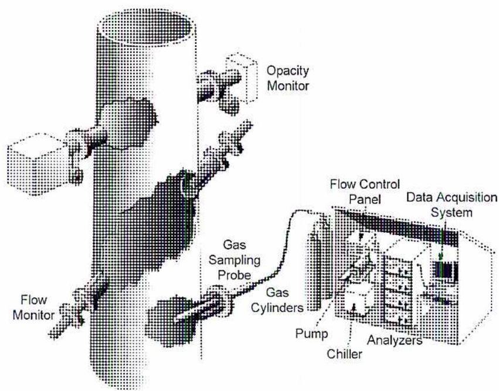
Figure 1
CEMS In-Situ and Extractive Instruments
A CEMS has three components as shown in Fig. 1:
Gas conditioning for an extractive system includes the following functions:
Continuous monitoring of Particulate Matter concentrations is not a standard practice in North America because no technology exists to measure particulate mass directly on a continuous basis. Most jurisdictions require periodic stack testing by a third party in addition to the ongoing monitoring provided by a CEMS. Particulate Matter
concentration is measured at that time. CEMS analyzers commonly measure stack opacity which infers the concentration of Particulate Matter.
To measure opacity, an optical measuring device called a transmissometer is used which works as follows. A light source is placed on one side of the stack with a detector on the opposite side. The intensity of light is measured at both locations, and the difference in intensities is due to the light lost due to intervening Particulate Matter. The proportion of light that is lost in transmission is the opacity. Such a system is shown in Fig. 2.
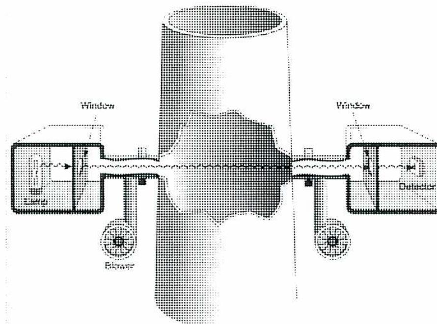
A schematic diagram of an opacity monitoring system. A central vertical stack is shown. On the left side, a rectangular housing contains a 'Light Source'. A horizontal line representing a light beam passes through a 'Window' in this housing, across the stack, and through another 'Window' in a similar housing on the right side. In the right housing, the beam is detected by a 'Detector'. Below each housing is a circular 'Blower' unit, indicated by arrows showing air flow towards the windows to prevent fouling.
Figure 2
Opacity Monitoring
The blower in this system is intended to prevent fouling the windows with particulate. Although this system is simple, inexpensive, and useful for plant internal control, it is not usually acceptable as a compliance instrument because of its single pass design. A double pass design that houses the light source and light detector in one location is shown in Fig. 3. This design makes it much easier to routinely check the operation and accuracy of the instrument.
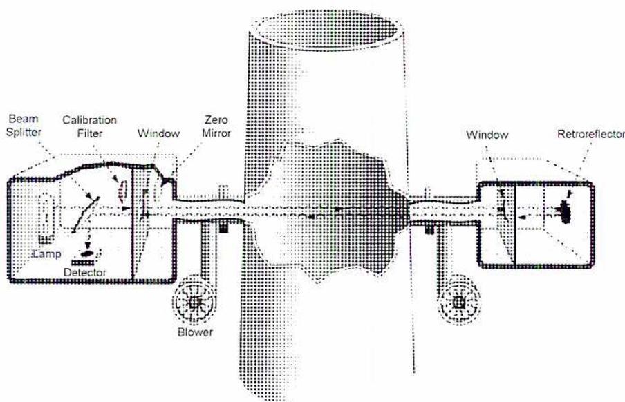
Figure 3
Opacity Monitoring
The zero mirror shown in Fig. 3 is used during preventive maintenance procedures to calibrate the instrument's zero reading. It is placed in the light path, so that the light intensity can be measured with no loss due to opacity. Similarly, the calibration filter (light filter) provides a known density for the light and is used to calibrate the opacity reading when it is placed in the light path.
There are several methods of measuring SO 2 concentration. In each case, the design of the instrument may be different, but the general principles apply. In infrared spectroscopy, as shown in Fig. 4, each type of molecule absorbs light at certain frequencies producing a unique absorption spectrum which serves as a "fingerprint." The analyzer has an infrared light source with the light admitted to two cells in parallel. A detector measures the light energy exiting from each cell. The reference cell contains a gas that does not absorb the light frequency used (e.g. argon or nitrogen), and the sample cell contains the stack gas tested.
The difference in light intensities exiting the cells is a measure of the concentration of the gas measured in the sample. Initially, a light frequency is selected using the band-pass filter which has the same absorption spectrum as the gas being tested for. The instrument is calibrated to measure a wide range of contaminants such as SO 2 .
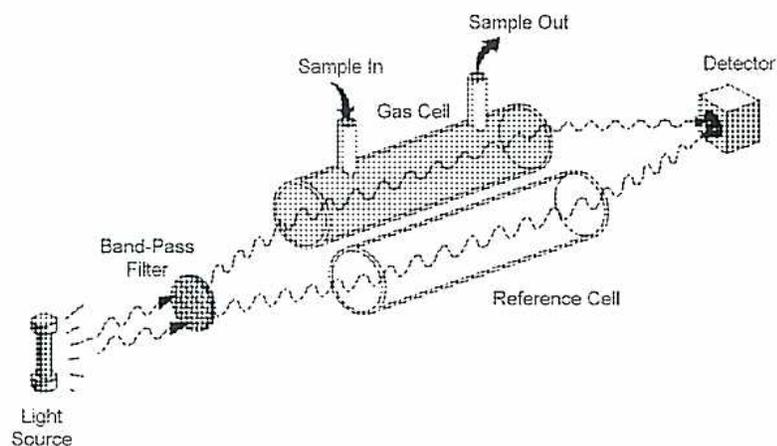
This diagram illustrates an SO 2 monitoring setup. A 'Light Source' on the left emits a beam of light that passes through a 'Band-Pass Filter'. The filtered light then splits or passes through a 'Gas Cell' (with 'Sample In' and 'Sample Out' ports) and a 'Reference Cell'. Both beams are finally detected by a 'Detector' on the right. Wavy lines represent the light path throughout the system.
Figure 4
SO
2
Monitoring
In differential absorption spectroscopy only a sample cell is used, and two light beams are admitted to it at different wavelengths. The reference measurement is made using one wavelength. It is the wavelength at which the gas does not absorb any energy.
In ultraviolet spectroscopy, ultraviolet light is used instead of infrared light. Fig. 5 shows an ultraviolet differential spectroscopy analyzer.
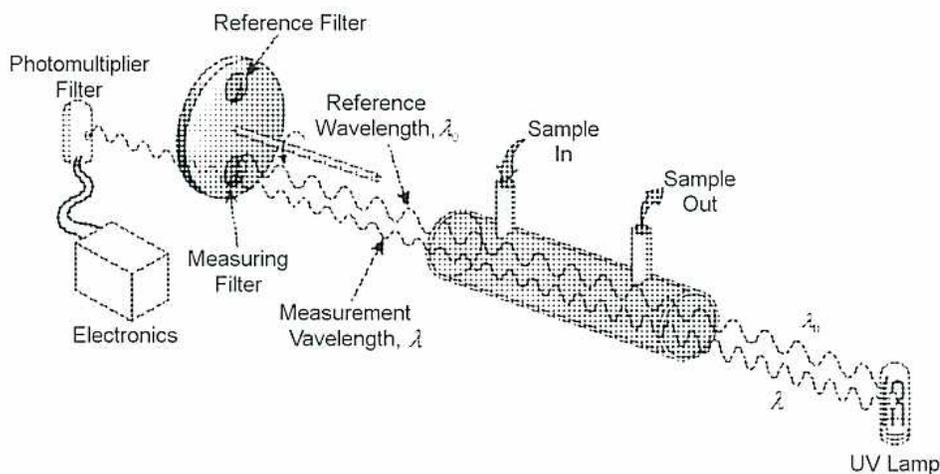
This diagram shows an ultraviolet differential spectroscopy analyzer. At the bottom right, a 'UV Lamp' emits light at two wavelengths, labeled \( \lambda_1 \) and \( \lambda_2 \) . The light passes through a gas cell with 'Sample In' and 'Sample Out' ports. The light then passes through a rotating wheel containing a 'Measuring Filter' (associated with 'Measurement Wavelength, \( \lambda \) ') and a 'Reference Filter' (associated with 'Reference Wavelength, \( \lambda_0 \) '). The filtered light is then directed to a 'Photomultiplier Filter' and 'Electronics' for signal processing.
Figure 5
Ultraviolet Spectroscopy
An entirely different approach is to monitor the photoluminescence, or fluorescence, of the gas tested for. This is based on the principle of a gas absorbing light at one wavelength and then emitting light at a different wavelength. Each compound has a unique fluorescence spectrum, just as it has a unique absorption spectrum. A fluorescence analyzer is shown in Fig. 6. The available concentration of SO 2 molecules excited by the ultraviolet lamp determines the intensity of the emitted light.
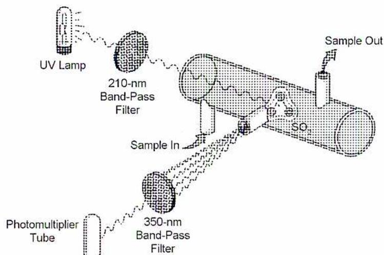
Figure 6
Fluorescence Analyzer
Polarographic analyzers, also called voltametric analyzers or electrochemical transducers, operate on an electrochemical principle. The \( \text{SO}_2 \) molecules are separated from the gas sample stream by a membrane that allows only the \( \text{SO}_2 \) to pass. The \( \text{SO}_2 \) is diffused into an electrolyte solution. The solution is oxidized at an electrode that is part of an electric circuit. The oxidation produces a potential difference between the electrodes. The resulting current gives an indication of the original \( \text{SO}_2 \) concentration. See Fig. 7.
![Diagram of a Polarographic Analyzer (Figure 7). A gas sample enters through a 'Sample in' tube, passing through a 'Membrane' that selectively allows SO2 molecules to pass into the 'Bulk electrolyte'. Inside the electrolyte, SO2 is oxidized at a 'Porous sensing electrode' (anode) and reduced at a 'Counterelectrode' (cathode). The oxidation produces H+ and SO4 2- ions, and a precipitate of FeSO4. The reduction produces FeSO4. The electrodes are connected to an external circuit with a battery and a variable resistor, showing the flow of 'Electrons' from the anode to the cathode. 'Sample out' tubes exit the cell.](a1d3651b1300f3670e3a9547bafc4db6_img.jpg)
Figure 7
Polarographic Analyzer
Another type of \( \text{SO}_2 \) analyzer uses thermal conductivity. The sample gas is directed across a heated wire, and the wire is cooled. The resulting change in resistance is measured. The degree of cooling and resulting resistance change is used to infer the makeup of the sample gas.
All of the analyzers discussed here can be used in either extractive or in-situ systems, with the exception of the photoluminescence analyzer which is not used in-situ.
\( \text{SO}_2 \) mass flow is not normally measured directly. Instead, a stack gas flow rate monitor is used, and the CEMS data acquisition computer calculates \( \text{SO}_2 \) mass flow from the measured \( \text{SO}_2 \) concentration and the flow rate of stack gases. This is called an inferred, or calculated, parameter.
\( \text{NO}_x \) concentration is measured in some of the same ways as \( \text{SO}_2 \) using infrared or ultraviolet spectroscopy or palaeography but not with photoluminescence or thermal conductivity.
One method used to measure \( \text{NO}_x \) concentration utilizes chemiluminescence. The first step is to reduce any \( \text{NO}_2 \) to \( \text{NO} \) which is done in a heated catalytic chamber. An ozone ( \( \text{O}_3 \) ) generator produces ozone by irradiating oxygen in a quartz tube with ultraviolet light. When the ozone and \( \text{NO} \) are brought together, the resulting chemical reaction produces infrared light in a specific range. The intensity of the light produced indicates the amount of \( \text{NO}_x \) in the initial gas sample. This is correlated with the sample flow rate to provide a measure of \( \text{NO}_x \) concentration. The analyzer is shown in Figure 8.
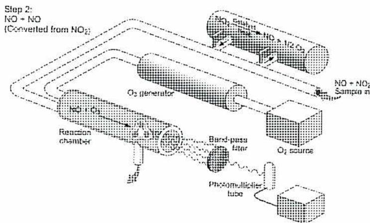
The diagram illustrates the components and flow of a chemiluminescence analyzer. A sample gas stream, labeled "NO + NO 2 Sample in", enters a "Reaction chamber". Inside this chamber, the \( \text{NO}_2 \) is converted to \( \text{NO} \) according to the reaction: \( \text{NO}_2 + \text{NO} \rightarrow \text{NO} + \frac{1}{2} \text{O}_2 \) . This conversion is labeled as "Step 2: NO + NO (Converted from NO 2 )". The chamber is connected to an " \( \text{O}_3 \) generator". The output of the reaction chamber, now containing \( \text{NO} \) and \( \text{O}_3 \) , passes through a "Band-pass filter" and into a "Photomultiplier tube", which detects the emitted light. An " \( \text{O}_2 \) source" is also shown connected to the system.
Figure 8
Chemiluminescence Analyzer
In catalytic calorimetry, two resistance temperature devices (RTDs) are coated with a ceramic catalyst. One RTD is exposed to the sample gas and the other to a reference gas. The catalyst causes the \( \text{NO}_x \) in the sample gas to be reduced to \( \text{N}_2 \) releasing heat. The resulting temperature difference between the RTDs is used to infer the original \( \text{NO}_x \)
concentration. As with \( \text{SO}_2 \) , \( \text{NO}_x \) mass flow is not normally measured directly but is a calculated parameter. Instead, the CEMS data acquisition computer calculates \( \text{NO}_x \) mass flow from the measured \( \text{NO}_x \) concentration and the flow rate of stack gases.
Elemental mercury is detected using absorption spectroscopy, vapour absorption onto a sensor coated with noble metal, or fluorescence. However, measurement of mercury concentration is made difficult because up to 10% of the mercury in flue gas is bound to the Particulate Matter as various compounds that behave differently. Heat and chemical reactions reduce the various mercury compounds to elemental mercury. Ultraviolet absorption is then used to measure the mercury concentration.
Oxygen concentration in stack gas can be measured using an electrocatalytic process called a fuel-cell oxygen analyzer. An electrochemical cell is constructed using zirconium oxide as a solid electrolyte. The gas sample to be tested is admitted on one side of the cell and a reference gas containing 21% oxygen is admitted on the other side. The electrolyte is heated to \( 850^\circ\text{C} \) , allowing oxygen ions to pass through it aided by a platinum film on the electrolyte that serves as a catalyst. Oxygen ions migrate from the reference side to the sample side creating a potential difference which is dependent on the difference between oxygen partial pressures. The resulting voltage is measured and combined with the known partial pressure of the reference gas. The voltage is used to calculate the percentage of oxygen in the sample. This type of analyzer can be used in either an extractive or an in-situ system. See Fig. 9.
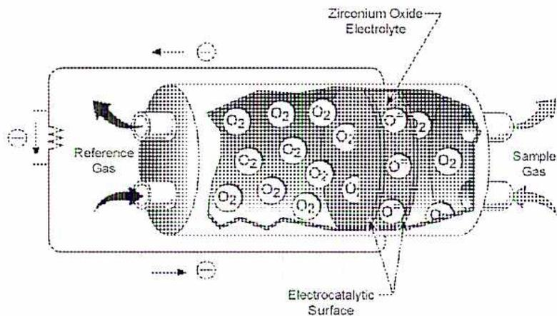
The diagram illustrates the internal structure of a fuel-cell oxygen analyzer. It features a central Zirconium Oxide Electrolyte. On the left, Reference Gas is introduced, and on the right, Sample Gas is introduced. Both gas streams pass over an Electrocatalytic Surface. Oxygen molecules ( \( \text{O}_2 \) ) from the reference gas are shown dissociating into oxygen ions ( \( \text{O}^{2-} \) ) at the catalytic surface. These ions then migrate through the electrolyte towards the sample gas side. On the sample gas side, the oxygen ions recombine to form oxygen molecules ( \( \text{O}_2 \) ). Arrows indicate the flow of the gases and the migration of the oxygen ions. Electrical connections are shown at the top and bottom, indicating the measurement of the resulting potential difference.
Figure 9
Fuel-Cell Oxygen Analyzer
Oxygen concentration can also be measured in extractive analyzers because oxygen is paramagnetic ( i.e. attracted by a magnetic field). Most other constituents of stack gases are diamagnetic ( i.e. repelled by a magnetic field.) Several designs of analyzers utilize this principle.
Because the installation and use of CEMS is required for industrial stacks, it is often forgotten that the resulting data also has value in the ongoing control of plant operations. Reporting on emissions is of more value if the results are used for real-time adjustments to keep the emissions at an acceptable value. This cycle of gathering data and applying it is shown in Fig. 10.
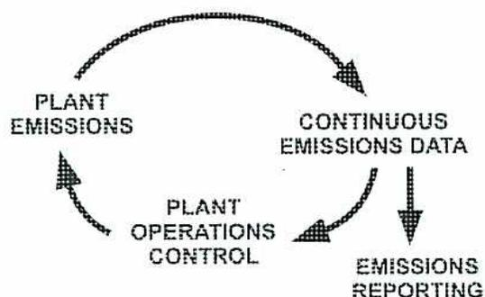
graph TD; A[PLANT EMISSIONS] --> B[CONTINUOUS EMISSIONS DATA]; B --> C[PLANT OPERATIONS CONTROL]; C --> A; B --> D[EMISSIONS REPORTING];
The diagram illustrates the CEMS Data Cycle as a continuous loop. It consists of four main components arranged in a circle: 'PLANT EMISSIONS' at the top left, 'CONTINUOUS EMISSIONS DATA' at the top right, 'PLANT OPERATIONS CONTROL' at the bottom left, and 'EMISSIONS REPORTING' at the bottom right. Arrows indicate a clockwise flow: from 'PLANT EMISSIONS' to 'CONTINUOUS EMISSIONS DATA', from 'CONTINUOUS EMISSIONS DATA' to 'PLANT OPERATIONS CONTROL', and from 'PLANT OPERATIONS CONTROL' back to 'PLANT EMISSIONS'. Additionally, a downward arrow points from 'CONTINUOUS EMISSIONS DATA' to 'EMISSIONS REPORTING'.
Figure 10
CEMS Data Cycle
The legal requirements for CEMS installations are contained within legislation, regulations, and plant environmental licenses or permits. They are specific to the regulatory jurisdiction(s) where the plant is located. CEMS regulations have three elements:
Environment Canada publishes national guidelines for CEMS, but the implementation of the guidelines is the responsibility of the individual provinces, through their own legislation, regulations, and licensing procedures. Enforcement of the guidelines is also a
provincial responsibility. Non-compliance with any regulation or license requirements is a serious offence, as with all government regulations and licenses, and will carry penalties that are defined both for the company and the individuals that are responsible.
A critical part of a CEMS is the Data Acquisition and Handling System and the related control and reporting functions that are integrated with it. A typical system is shown schematically in Fig. 11, and Fig. 12 showing the hardware interconnection for a plant with two sources of emissions (such as two electrical generating or process production units).
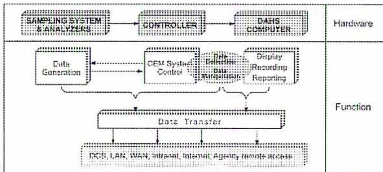
|
SAMPLING SYSTEM
& ANALYZERS |
CONTROLLER |
DAHS
COMPUTER |
Hardware |
|
Data
Generation |
CEM System
Control |
Data Handling
Data Acquisition Display Recording Reporting |
Function |
|
Data Transfer
DCS, LAN, WAN, Intranet, Internet, Agency remote access |
|||
Figure 11
CEMS Data Acquisition
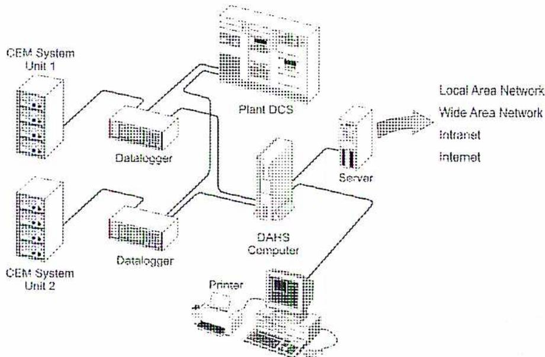
graph TD
U1[CEM System Unit 1] --> D1[Datalogger]
U2[CEM System Unit 2] --> D2[Datalogger]
D1 --> DCS[Plant DCS]
D2 --> DCS
DCS --> DAHS[DAHS Computer]
DAHS --> P[Printer]
DAHS --> S[Server]
S --> N[Local Area Network
Wide Area Network
Intranet
Internet]
Figure 12
CEMS Data Acquisition
The regulatory authority certifies CEMS equipment before it is accepted for compliance monitoring. Certification is done according to Guideline EPS/1/PG/7 of Environment Canada. It includes comparison of the instruments' measurement with an independent reference measurement ensuring the accuracy and overall performance testing of the entire system. Several standards of the International Standards Organization (ISO) are also available for CEMS certification. Certification is renewed through independent testing once or twice per year.
Performance specification testing for certification includes the following:
CEMS equipment is complex and specialized, and it can only operate reliably and accurately if it is well maintained. A comprehensive Quality Assurance (QA) program, which must be documented in a QA Manual and approved by the regulatory authority, is required. The QA activities are documented, and their completion and results reported to the regulatory authority on a regular basis.
Quality Assurance begins with the specifications and procurement of a new system and continues through its installation, performance specification testing, and certification. In routine operation, Quality Assurance programs involve the following procedures, which are reported on to the regulatory authority as they are completed:
Explain the significance of the following water quality parameters: iron, phosphorous, biochemical oxygen demand (BOD), chemical oxygen demand (COD), hydrocarbons, temperature, flow, pH, and nitrogen.
Plants and industries often use large volumes of water in their processes and for cooling. Much of this water is returned to the environment but the quality of the water has changed. The effects of effluent water on natural water bodies and on the life forms that depend on them can be severe. The water downstream of the plant (effluent) must also be in a form that is usable by downstream consumers. As with air emissions, the regulations, permits, and licenses that govern a plant's environmental performance include clearly defined limits for the maximum quantity of certain contaminants. These include requirements for the monitoring and reporting to a government agency.
Exactly what is monitored and what the limits are varies from jurisdiction to jurisdiction and from plant to plant. The Engineer responsible for the safe operation of the plant must be familiar with all of the environmental requirements, the monitoring that is in place, the current performance against emissions requirements, and the type and frequency of reporting required.
Iron appears in natural waters as a result of runoff and iron in ground water. Dissolved iron, in both ferrous and ferric forms, is an indication of corrosion in upstream plant equipment. It discolours equipment that uses the water, especially porcelain equipment such as sinks and toilets. Iron levels are reduced in water that is to be used for cooling tower makeup or boiler feed water. Iron levels are reduced in clarifiers, softeners and demineralizers. Iron in drinking water alters the taste of beverages, such as tea and coffee, and discolours laundry.
Phosphorous is a nutrient for plants. When it is present in water bodies as a contaminant, it encourages excessive growth of water plants that alters the natural habitat of fish and animals. It also makes the water unsuitable for recreational purposes such as swimming and boating. At certain times of the year, excess phosphorous encourages algae growth in lake water which produces seasonal algal blooms. Algae can also block sunlight to the lake plants and produces an unpleasant smell as it decays after dying back. The entire ecology of a lake habitat can be adversely affected by algae.
In industrial plants algae can foul the cooling surfaces of heat exchangers and condensers. Boiler blowdown water, water treated with phosphate ( \( \text{PO}_4 \) ), and surface water runoff from land fertilized with phosphorous cause phosphorous contamination of natural water.
BOD is the amount of oxygen in mg/L consumed by microorganisms (mainly bacteria) in water as the organisms break down food into its usable nutrients. The food is primarily organic compounds in the water. BOD is measured in a water sample over a five day period at a temperature of \( 20^\circ\text{C} \) .
As contamination increases, the number of microorganisms increases in response to the larger food supply. As the microorganisms break down the contamination, they consume more oxygen and BOD increases. An increase in BOD is an indication of both an increase in organic contamination of the water and a potential decrease in the oxygen concentration. The reduced oxygen availability eventually has an impact on all oxygen-breathing life forms in the water including fish and microorganisms. As beneficial aerobic (oxygen consuming) bacteria are killed, their role in breaking down organic compounds is assumed by anaerobic bacteria. The anaerobic bacteria do not require oxygen, but do add toxins, such as \( \text{H}_2\text{S} \) , to the water as a result of their own digestive processes. If the oxygen concentration reaches zero, the water turns black and emits a strong, pungent odour.
COD is the amount of oxygen in mg/L required to oxidize both organic and oxidizable inorganic compounds. Both biodegradable and non-biodegradable material is included in the measure. The test for COD can be completed in three hours. The significance of COD is in comparing the difference between COD and BOD. This difference is due to non-biodegradable contaminants that oxidize in a water body by consuming oxygen directly, and the presence of these contaminants is what is effectively being measured. Non-biodegradable contaminants include:
Hydrocarbons are molecules containing hydrogen and carbon. There are many varieties of hydrocarbons used and produced in the processes of industrial plants. They are also called organic compounds. They include alcohols, aldehydes and ketones, acids, esters, ethers, mercaptans, amines and amides, aromatics, carbohydrates, fats, oils, waxes, proteins, and amino acids.
Hydrocarbons are extremely toxic to plant and/or animal life when they contaminate natural waters. The film, that some hydrocarbons leave as they float on the water's surface, inhibits the natural gas exchange between the water's surface and the atmosphere. It deprives the water and its inhabitants of oxygen. Many hydrocarbons also produce a film on anything that they contact. This can vary from a light oil film on the hull of a recreational boat, to an oil spill that causes widespread fatalities among birds.
Wastewater that is contaminated with hydrocarbons is difficult to treat because the many different types of hydrocarbons require different removal processes. Therefore, a wastewater treatment system is custom designed for each specific application. Hydrocarbon contamination is the usual cause of an increase in BOD and/or COD.
Many plant processes, especially those that use natural water for cooling purposes, return the water to the environment at an elevated temperature. This can disturb the natural habitat by favouring certain plant species over others. It also encourages excessive plant growth that chokes a river or lake, altering the quality of fish available for recreational or commercial fishing. It also creates zones of temperature difference in the lake or river. These zones can cause fatalities among fish, which swim from one temperature area to another suddenly and are unable to adjust to the change.
If water temperature is elevated even slightly, it increases evaporation and causes a net loss of water from the body of water. This has a similar effect to industrial consumption of water that is not returned, and these two situations may compound each other's effects.
Many environmental regulations, permits, and licenses require measurement and monitoring of the flow of water into and out of a plant in order to calculate or estimate overall water consumption. It is important to ensure that water returned to a natural environment is as clean and free of contaminants as possible. The net amount of water returned to the environment is also a concern. Industrial consumption of water causes lowered levels in lakes and rivers which affects their suitability for recreational purposes. Additionally, a lower water level allows sunlight to penetrate more deeply into the water, altering the ecology of the natural habitat by favouring some species of plants over others. Excessive plant growth alters the habitat for fish, invertebrates and animals, and the resulting shift in the ecology becomes irreversible.
A high flow rate of water from a plant to a natural water body may produce high water velocity. This can cause layers or zones of the water body to differ in temperature and oxygen content, affecting cold-blooded animals, such as fish, which swim from one zone to another and are subjected to sudden temperature changes. Large-scale deaths of a fish population can result. In some cases, there may be a need to regulate wastewater flow as part of a regional flood control scheme.
Finally, wastewater flow rate affects the concentration of the contaminants in the stream, so it may be required to measure and report flow rate. An increase in flow rate may sometimes be necessary in order to dilute the contaminants and keep them within legal limits.
Living organisms are highly sensitive to pH alterations in their environment. Aquatic plants and animals suffer and often die due to industrial contamination that has altered the pH of their home waters. An example is the effect of acid rain along the eastern seaboard
of North America. Due to the lowering of the pH, all life forms in entire lakes have been killed. The pH of natural waters can be altered by:
When contaminant chemicals break down, they release nitrogen and other elements and compounds into natural water. Common examples of chemical contaminants are nitrite and ammonia.
Like phosphorus, nitrogen is of concern because it is a nutrient for plants, and its detrimental effects to natural waters are similar to those of phosphorus.
Ammonia ( \( \text{NH}_3 \) ) in natural waters forms ammonium hydroxide ( \( \text{NH}_4\text{OH} \) ) which elevates the pH of the water, so it becomes detrimental to fish, plants, and invertebrates.
Some organisms consume nitrogen as food, so its presence can raise the Biochemical Oxygen Demand in the same way as organic contaminants.
Explain the general requirements for wastewater monitoring.
As with CEMS equipment, the legal requirements for wastewater monitoring and reporting are contained in the legislation, regulations, and plant environmental licenses or permits. All the permits are specific to the regulatory jurisdiction(s) that the plant is located within. Each plant has clearly defined limits for:
Wastewater from industrial plants is often heavily contaminated with toxic compounds or disease-causing organisms. The water is purified to a level where it is an acceptable feed for municipal water treatment plants that provide drinking water. In addition, wastewater is often very low in oxygen content due to a high BOD and/or COD. This condition is hazardous to all plants and animals that live in the natural waters to which the wastewater discharges. Add to these concerns the issues around the appearance, taste, and odour of contaminated water and it becomes evident that wastewater treatment is a complex undertaking. Treatment processes and equipment are specific to the individual plant that produces the wastewater although the ultimate goal is to produce a clean effluent that meets or exceeds the standards of the regulatory authorities.
Because of the complex nature of the processes involved and because of the immediate risk to human health if wastewater is not properly treated, wastewater treatment plant operators are often certified. This requires a process of education and certification that has levels of competence and is administered independently of any other professional or trade certification process. In other cases, a specific level of Power Engineering certification is required sometimes in conjunction with specified levels of education about wastewater treatment.
Explain how data received from environmental monitoring equipment is interpreted.
The Data Acquisition and Handling System of an environmental monitoring system has two main functions:
The data handling function involves receiving and storing the data in a retrievable format so that it can be used to:
In order to address these needs, data is presented in real-time, as it is gathered, to the operating staff in a format or interface. When presented in real time, the information is useful and timely. Data is also categorized and stored as historical data for ongoing reporting and for any future inquiries. The historical method of achieving this is to utilize paper chart recorders, with the charts stored for future reference. Today's systems, especially in larger plants, are more likely to have the data processed by computers and stored in dedicated "historian" electronic databanks.
The control function of the system usually initiates and monitors the routine preventive maintenance tasks such as regularly scheduled analyzer calibrations, data backup procedures, and routine changeover of redundant equipment. The system has alarms which alert the operations people to any variables that are out of limits. The alarm system can be via a hardwired annunciator or through the computer interface. The alarms also warn of equipment malfunctions, calibration failures, or unusual situations which require intervention.
Emissions limits are often expressed in terms of an average emission over a unit period of time, such as kilograms per day. The data handling and control systems automatically average the data as needed before using it for display, alarming, or reporting. Time periods vary widely depending on the importance and volatility of the parameter
measured and on the difficulty of getting an accurate measurement. Stack opacity is often measured as a six-minute average, whereas other emissions may be averaged for 15 minutes, one hour, 24 hours, or one month. Sometimes, multiple limits may exist for one parameter. For example, stack opacity may be restricted to a certain maximum value on a six-minute average, but also be restricted to a slightly lower value for a one hour average.
These two limits are displayed and alarmed separately, since exceeding either one constitutes a non-compliance event (often called a violation.) Averaging data can be done in two ways depending on the regulatory requirement. The data can be averaged into blocks of time that are discrete and distinct from each other and follow each other in time sequence. Alternatively, the data can be in the form of a rolling average which is averaged over a certain number of the immediately preceding time periods. The earliest time period in the average is dropped after a new time period has elapsed, and the new time period's data takes its place to complete the average. This is illustrated in Fig. 13, showing a three hour average in both block and rolling form.
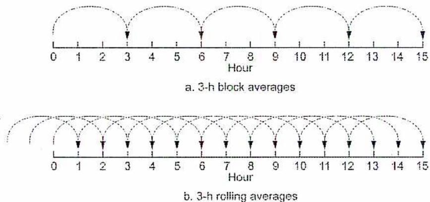
a. 3-h block averages
b. 3-h rolling averages
Figure 13
Three Hour Averages of Data
Rolling averages are used because malfunctions or upsets of equipment can be corrected, and emissions brought back under control, without causing nuisance alarms and indications of violations.
Explain the significance of environmental monitoring equipment failure.
Environmental monitoring has a defined minimum availability of the monitoring system and equipment. If the monitoring system malfunctions and does not produce reliable data, then there is no environmental monitoring. System availability is defined as a percentage as follows:
$$ \frac{\text{Total unit operating hours for which the monitor (system) provided quality-assured data}}{\text{Total operating hours during the period (daily, monthly, or quarterly)}} \times 100 $$
The system, or any of its individual components, does not have to fail completely for the system to be unavailable. The system fails to “provide quality – assured data” if an analyzer has a calibration error or if the calibration drift is excessive. At any time an analyzer’s drift exceeds twice the amount of drift in its performance specification, the analyzer is “out-of-control,” and the data that it produces is invalid. If the system availability falls below its required minimum, the monitoring system is out of compliance. This event becomes a license or regulation violation (just as if a limit on an emission’s concentration had been exceeded.)
Availability is sometimes referred to as “uptime,” and the required minima (minimum values) vary from jurisdiction to jurisdiction, and depending on the equipment used and the emissions monitored. Typical minima are from 90% to 95% in each calendar month.
Continuous Emissions Monitoring Systems that are used where emissions are reported in units of mass per unit time (e.g. kilograms per hour) fill in the database for time periods when data is invalid or if the data is unavailable due to system failure. The fill data that is used can be reference test data, Quality assured data from a certified backup system, data from predictive models, or data from algorithms that are approved by the regulatory authority. In Canada, the correlation between emissions and plant load, and/or the mass balance correlation between emissions and fuel flow, if they are pre-determined, can be used to fill in invalid or missing data for up to 168 hours. After that time, backfill data must come from either reference testing or another CEMS.
Indications of problems with environmental monitoring equipment come from the system alarm screens and/or annunciators. The operating staff routinely checks the real-time data. The regulatory authorities also require periodic reviews of the recorded data. Alarms give an indication of immediate problems, such as analyzer failures or computer crashes. Data reviews give an indication of more long-term problems, such as:
When a system problem is discovered, it is ascertained how the diagnosis and repair of the problem will affect the system’s availability for the current reporting period.
Questions to ask include:
If an alarm or annunciator indicated the problem, then it is likely that there is a malfunction or failure in a specific instrument or device which is indicated by the alarm system. Repair is a matter of having the appropriate staff diagnose the cause and repair it. If visual inspection of data indicates a problem, there are several possibilities:
These possibilities are confirmed by the appropriate staff, one at a time, until the problem is found and corrected.
Breakdowns that require corrective maintenance that affects system availability, or may affect it, are repaired with special attention given to the root cause of the failure. This may include replacement of equipment which is aging or prone to failure, the introduction of new preventive maintenance practices, or the modification of existing maintenance practices including the interval of their scheduling.
Finally, if system availability is compromised for a reporting period, it is imperative to make the regulatory authority aware of this. If the data acquisition system is not accessed directly by the regulators, a formal notice of non-compliance is required, usually in writing. This may be required immediately or after the end of the reporting period.
B2.8